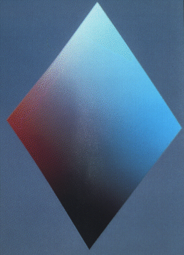

dok*o —
Ingo in kiun oni povas instali porteblan komputilon por konekti ĝin al loka reto (aŭ surtabla komputilo), kurentofonto, periferiaĵoj (i.a. plendimensia klavaro) ktp.
Angle: docking station, craddle
Ruse: док-станция, кроватка
2002-07-31
Agado celanta verkadon, perfektigon kaj aktualigon de dokumentaro.
Angle: documentation
Ruse: документирование
1996-02-29
Kolekto da tekstoj, surpaperaj kajaŭ elektronikaj, priskribantaj la strukturon kaj aplikmanieron de programo aŭ de programa produkto. Dokumentaro servas por faciligi la uzadon de programaro kaj kutime entenas manlibrojn (instrukciojn), lernolibron, helpilojn ks dialogajn dokumentaĵojn.
Angle: documentation
Ruse: документация,
инструкция
1996-02-29
 Datumaro traktebla per aplikaĵo. Ekz-e tekstan dokumenton oni
povas trakti per verkilo; grafikan
dokumenton, per grafikilo, ktp.
Datumaro traktebla per aplikaĵo. Ekz-e tekstan dokumenton oni
povas trakti per verkilo; grafikan
dokumenton, per grafikilo, ktp.
Noto. Se «dokumentaro» estas la angla documentation, tiam dokumento (1) evitindas. Vd instrukcio.
Angle: document
Germane: Beleg
Ruse: текст; документ
1996-02-29
 Disa
datumbazo, ebliganta traduki plenan
domajnnomon mnemonikan (ekz-e iis.nsk.su) en la nombran Internet-adreson (194.226.171.139)
kaj inverse.
Disa
datumbazo, ebliganta traduki plenan
domajnnomon mnemonikan (ekz-e iis.nsk.su) en la nombran Internet-adreson (194.226.171.139)
kaj inverse.
Angle: Domain Name System, DNS
France: système de noms de domains
Ruse:
доменная система имён
1996-02-29
Aplika tereno, kaj speciale
 Por ĵeto, la maksimuma subaro de la fonta aro, sur kies elementoj la ĵeto estas
difinita; por algoritmo, ĝia
«konverĝejo»; por duloka rilato
R⊆A×B, la aro
Por ĵeto, la maksimuma subaro de la fonta aro, sur kies elementoj la ĵeto estas
difinita; por algoritmo, ĝia
«konverĝejo»; por duloka rilato
R⊆A×B, la aro
{ x∈A : (∃y∈B)[(x,y)∈R] }
— kp variejo.
Noto. La neologismo domajno en [EKV] estas parto de la termino «integreca domajno»; ĝi estus utila ankaŭ por la historiografio de la Mezepoko, kie ĝi povus signifi nefeŭdan posedaĵon de princo (ekz-e «la reĝa domajno»).
Angle: domain
Germane: Domäne, Gegenstandsraum, Bereich, Definitionsbereich
Hispane: dominio
Ruse: область, домен
1996-02-29
Noto. Sekve oni ne uzu la vorton «donitaĵo» anstataŭ datumon, kiu ja povas rilati ankaŭ al la rezulto.
Angle: datum, pl datums; input
Ruse: данное
1996-02-29
Procedo por solvi la problemon de ekskluzivigo, proponita de E. W. Dijkstra.

Angle: sleeping barber
1996-02-29
 La tria litero de la ĝermana runa alfabeto;
litero de la moderna Islanda alfabeto: þ. Ĝia fonetika valoro en la Islanda
egalas la anglan «th» en thorn. Kp edo.
La tria litero de la ĝermana runa alfabeto;
litero de la moderna Islanda alfabeto: þ. Ĝia fonetika valoro en la Islanda
egalas la anglan «th» en thorn. Kp edo.
Noto. La anglosaksoj kaj la islandanoj nomas ĝin «thorn», vorto kiu etimologie kaj sence parencas al nia «dorno». La svedoj kaj danoj nomis ĝin «thurs» (t.e. «grandegulo»). Ĝia grafika formo probable venas de la Latina D.
Angle: thorn
1996-03-30
Tiu edro de prestipo, kies rando situas ĉe la supro de la signobildo. Kp ventro.
Angle: back
Ruse:
верхняя стенка литеры
1996-11-05
Problemo de diskreta matematika programado kaj samtempe ekzemplo pri NP-kompleta problemo.
Estu P la kapacito (maksimume tenebla pezo aŭ volumo) de dorssako, kaj estu n∈ℕ diversaj nutraĵoj kun la «pezo» pi kaj «valoro» (ekz-e energienhavo) vi, i∈[1…n]. Necesas trovi tian kombinon de la nutraĵoj, ke la suma valoro (la celfunkcio)
v₁ + v₂ + … + vn
estu maksimuma, tamen sen superi la kapacitlimon
p₁ + p₂ + … + pn ≤ P
Angle:
knapsack problem
Germane: Rucksackproblem
Ruse: задача о
рюкзаке
1996-02-29
Rim. «DOS» estas registrita komerca marko de IBM.
1996-02-29
Programaj procezoj zorgantaj pri operacioj super dosieroj: lokado sur datumportilo, atingokontrolo, registrado de restaŭrkopioj, tenado de dosierujoj. Kutime estas aro de bazaj funkcioj realigataj en la operaciumo, kaj kromaj funkcioj, disponigataj per dosieradministrilo kaj DBM.
Angle: file management
Germane: Dateiverwaltung
1996-02-29
Noto. Kp dosiersistemo.
Angle: filer, file manager, file system
Ruse:
файловая система
1996-02-29
Strukturo de dosiero, difino de ties datumanoj kaj de ilia situo en la ekstera memoro. Ĉiu dosieraranĝo ebligas unu aŭ plurajn atingomanierojn.
Angle: file organization
Ruse: организация
файла
1996-02-29
En dosiero, finilo indikanta la dosierfinon. Ekz-e en MS-DOS por tiu funkcio estas uzata la stirsigno SUB (la kodono 26).
Angle: end of file, EOF
Ruse: признак конца файла
1996-02-29
Angle: end of file, EOF
Ruse: конец файла
1996-02-29
Perioda farado de restaŭrkopioj kaj rearanĝado de ĉefdosiero por garantii datumintegron kaj rendimentan datumatingon.
Angle: file maintenance
Germane: Dateiwartung, Dateipflege
Ruse:
сопровождение файла
1996-02-29
Ω En programado por hierarkia dosiersistemo, dosiernomo kun vojprefikso. Ekz-e pok/eo/kompleks/utf/d.utf. Vd absoluta dosierindiko, relativa dosierindiko.
Do, oni povas malkomponi dosierindikon — ekz-e
/usr/local/include/slang.h
en tri partojn: vojprefikso (/usr/local/include/), nombazo (slang) kaj finaĵo h).
Angle: path, pathname
France: cheminement
Ruse: составное имя
файла
2000-08-17
Ω Signoĉeno (simbola nomo) uzata por atingi iun dosieron. En Unikso tiu termino laŭnorme signifas nur nombazo, kvankam neformale oni uzas ĝin ankaŭ por tuta dosierindiko.
Angle: filename
Ruse: имя файла
2000-08-17
Ω En Unikso kaj similaj operaciumoj, entjero indikanta malfermitan dosieron en procezo (indico en la tabelo da malfermitaj dosieroj). Kutime la numeroj 0, 1, 2 estas rezervitaj por ĉefenigujo, ĉefeligujo, ĉeferarujo resp.
Angle: file
descriptor, file handle
Ruse: логический номер
файла
1998-08-24
Nomhava (vd indeksnodo) datumaro, kompleta por la uzo de tasko.
En Unikso estas ses specoj de dosieroj: ordinara dosiero, dosierujo, speciala dosiero disponaĵa, ligilo, nomhava dukto, kontaktoskatolo.
Angle: file
Ĉeĥe: soubor
France: fichier
Germane: Datei
Hispane: fichero
Pole: plik
Ruse: файл
Turke: dosya, kütük
1996-02-29
En Unikso, la tuto de la dosieroj, la dosierujoj kaj la helpaj stirdatumoj registritaj sur disko.
Noto. Oni povas diri dosieraro, se onin ne ĝenas la finvorta «eraro». — Kp dosieradministrilo.
Angle: file
system
Ruse: файловая система
1996-02-29
En Paskalo, malsimpla tipo por prezenti dosierojn. En Paskalo ĉiuj datumoj, tenataj en dosiero, havas unu saman «komponantan» datumtipon.
dosiertipo = "DOSIERO" "EL" datumtipo.
Angle:
file type
Ruse: тип файла
1996-02-29
Ω En dosieradministrilo, datumo (kutime, dosiero) kies anoj (dosierujanoj) priskribas dosierojn kaj disponigas atingon al ili per ilia teksta nomo. Vd subdosierujo, superdosierujo.
Jen ekzempla listo por Uniksa dosierujo (la unua kolumno entenas dosiernumeron de indeksnodo; la dua, simbolan dosiernomon):
$ ls -ai 67976 . 68058 I.html 68105 ME.html 117064 .. 68012 INDC.html 68111 MENUO.html 68007 A.html 68014 INDD.html 68112 N.html 68100 ADA.html 68015 INDE.html 68114 NAJBARL.html 68008 AL.html 68016 INDF.html 68115 O.html 68096 ALGOL.html 68017 INDG.html 68070 OKDAMOJ.html
Angle: catalog, directory, folder
France: répertoire, dossier
Ruse: каталог,
справочник, директория, папка
Turke: rehber
1996-02-29
Ω Komponanto de dosierujo atribuanta dosieron al dosiernomo. Pluraj dosierujanoj povas referenci unu saman dosieron. Vd rekta ligilo, simbola ligilo.
Angle: directory entry, link
2000-08-27
Misrendimenta funkciado de virtuala memoro, kiun kaŭzas misproporcio inter la amplekso de disponebla memoro kaj disaj atingomendoj pri la virtualaj paĝoj; rezulte la datumprilabora tempo estas elspezata por permuti la virtualajn paĝojn. Simila situacio povas estiĝi pri kaŝmemoro.
Angle: thrash
Ruse: перегрузка
2000-09-27
Interna simetrio en matematika sistemo (ekz-e
aksiomaro), ekz-e la eco de kelkaj reguloj kaj formuloj de Bulea algebro havi same validan
dualan regulon aŭ formulon, en kiu aŭo, kajo, implikacio, ekzistokvantoro, universala kvantoro ĉe nego regule ŝanĝiĝas al resp. kajo, aŭo,
«kontraŭinversa» implikacio, universala kvantoro, ekzistokvantoro. Ekz-e
¬(x∨y) ≡ ¬x∧¬y
¬(x∧y) ≡ ¬x∨¬y
x⇒y ≡ ¬y⇒¬x
¬[(∃x) P(x)] ≡ (∀x)[¬P(x)]
¬[(∀x) Q(x)] ≡ (∃x)[¬Q(x)]
Rim. Ankaŭ en aliaj branĉoj de matematiko oni parolas pri dualeco: kunaĵo — komunaĵo en arteorio; verticoj — eĝoj en grafeiko; dualaj problemoj en matematika programado ktp.
Noto. Oni ankaŭ povus paroli pri «reciproka interŝanĝeblo» de la objektaj roloj ĉe diversaj interpretoj. La vorto duala [PIV1] ankaŭ havas signifon gramatikan («dunombro», ekz-e en Slavono).
Angle: duality
Ruse:
двойственность, взаимность
Linia listo, en kiu la operacioj de aldono (registrado) kaj depreno (legado) estas aplikeblaj nur al la ekstremoj (al la komenco aŭ al la fino). Specialaj okazoj de dukapa vico estas rektvica memoro kaj inversvica memoro.
Angle:
deque, double-ended queue
Ruse: двусторонняя
очередь
1996-02-29
Grafeo kies kolornombro estas 2. Ekz-e Petri-reto.
Angle: bipartite graph,
bichromatic graph, dichromatic graph
Ruse: двудольный
граф
1996-02-29
Kojnoforma supersigno ˇ (renversita ĉapelo), inventita de ĉeĥaj skribistoj kaj
uzata en multaj Orient-Eŭropaj (ĉeĥa, latva, litova, kroata, slovaka,
slovena) kaj Orientaj lingvoj (ofte en transskriboj), precipe por esprimi la
ŝuŝajn sonojn ŝ, ĵ, ĉ (per š, ž, č), aŭ molan prononcon (Ď, Ě, Ň,
Ř, Ť). En tiu lasta funkcio la dukorno aperas super ĉeflitero, dum por iuj el la respondaj etliteroj oni preferas postmeti strekon, aŭ apostrofon (ď, ň, ť).
Kp duobla dekstra korno, dekstra korno, liva korno.
Angle: caron, hacek
Ĉeĥe: háĉek
Serba-Kroate: kvaĉica
1996-04-07
Ω En operaciumoj (Unikso, MS-DOS), abstrakta dosiero, bufro uzata de vico da procezoj aranĝitaj tiel, ke la eligaĵo de unu estas la enigaĵo de la sekva (vd alidirekti). Ofte signata per | (vertikala streko). Ekz-e la komando
Angle: pipe
France: relais
Ruse: канал, труба
1996-09-25
Plurlineara funkcio duargumenta.
Angle: bilinear form
Ruse: билинейная
форма, билинейная функция
1998-08-27
Kombino de du literoj
uzata por prezenti unu sonon kaj ofte rigardata kiel unu litero.
Ekz-e ch [ĥ] en la ĉeĥa; ĝia loko en la ĉeĥa alfabeto estas inter h kaj i, kaj en vortaro la leksikografia ordo estas
Egypt ‹ echo ‹ ejhle
Simile, la duliteraĵoj cx, jx ktp en la surogata skribo por la literoj de Esperanto. Simile «triliteraĵo», «plurliteraĵo».
Rim. Kp ligaturo.
Noto. Kp direkta grafeo (angle homonima).
Angle: digraph
Ruse: диграф
1996-04-16
Operacio kun du operandoj, t.e. kies loknombro estas 2.
Noto. «Duargumenta» ne ĉiam taŭgas: iuj operandoj estas rezultaj.
Angle: binary, dyadic operator
Germane: dyadisch, zweistellig
Ruse:
двуместная операция, бинарная операция
1996-02-29
Rilato kies loknombro estas 2. Inter tiaj rilatoj oni speciale apartigas plurajn specojn.
Estu ¤ rilato super A. Tiam ¤ estas
Noto. Kp rejŝo.
Angle: binary relation
Ruse: двуместное
отношение
2001-02-16
Serĉo kiu okazas dum la uzulo enigas la serĉendan signoĉenon; ekz-e en Emakso, se oni volas trovi aperon de vorto krokodilo, la enigo de k enpoziciigos la kursoron sur la unuan sekvantan aperon de la litero k; la posta enigo de r, sur tian aperon de kr, ktp; rezulte, tre probablas ke sufiĉus trajpi krok por trovi la serĉataĵon.
Angle: incremental search, seach as you type
2002-12-18
La hungara supersigno ˝ (kiel tiu en la literoj Ő, ő, Ű,
ű).
En Teĥo ĝin esprimas \H{}.
En la hungara lingvo duobla dekstra korno indikas kombinon de umlaŭto (kiel tremao) kaj longigilo (kiel dekstra korno), tial iuj nomas ĝin «longa tremao». Tamen ĉar ekzistas ankaŭ «duobla liva korno», ni preferis la pli sisteman terminon. Kp dukorno.
Uzitan aparte oni povus nomi tiun diakritilon «sekundosigno».
Angle: Hungarian umlaut, double acute
1996-04-12
En dialogo, du klakoj per musbutono dum difinita, mallonga tempintervalo (kutime oni fiksas ĝin inter 0.1 kaj 1 s), kiu funkcias kiel tujaĵo ebliganta eviti menuojn.
Angle: double click
Ruse: двойной щелчок
1996-02-29
La supersigno
`` — kiel tiu en la literoj
Latinaj Ȁ ȁ (super A, a), Ȅ ȅ (E, e), Ȉ ȉ (I, i), Ȍ ȍ (O, o), Ȑ
ȑ (R, r), Ȕ ȕ (U, u); en kirilico tiu diakritilo servis por indiki, ke upsilon Ѷ ѷ
oni voĉlegu [i] (kiel en «sinodo»), ne [v] (malkiel en «evangelio»).
Kp liva korno, duobla dekstra korno, dukorno.
Angle: double grave
1996-04-12
Signo
‡ en formo de dutenila ponardo, uzata kiel referencilo. Kp ponardo.
Angle: double dagger
Ruse: двойной кинжал
1996-09-26
Nevakua aro super kiu estas difinita duloka asocia operacio; kp grupo, monojdo.
Angle: semigroup
Ruse: полугруппа
1996-02-29
Tia metodo por serĉo en orda aro, ke dum ĉiu paŝo la meza elemento de la aro estas komparata kun la serĉato kaj depende je la komparrezulto estas elektata duono de la aro por la sekva serĉopaŝo. Do, ĉiu paŝo duonigas la nombron de la ekzamenotaj datumoj, kaj sekve la kompliko de tia metodo havas la grandoordon O(log n). Vd ekzemplajn programojn en Paskalo (Duoniga serĉo en Paskalo), C (Duoniga serĉo en C) kaj Ada (Duoniga serĉo en Ada). Kp Fibonaĉia serĉo, dupartiga serĉo.
Angle: binary search
Ruse: поиск делением пополам
1996-02-29
Duuma dosiero entenanta «duontradukitan» programon plenumeblan per interpretilo. Duonkodo tuj uzeblas sur ciu platformo havanta koncernan interpretilon; aŭ, por plua rendimento, oni povas fintraduki la duonkodon en la veran kodon de la koncerna komputilo. Duonkodon uzas Emakso por LISPaj pakaĵoj; Teĥo (por la kompostitaj *.dvi-dosieroj); Ĝavo (programoj por ties virtuala maŝino).
Angle:
byte-code
Ruse: полукод, байт-код
1999-09-17
Ajna el diverstipaj malmultekostaj memororganoj, kutime fabrikita en formo de ico, uzata por teni duumajn datumojn en cifereca cirkvito.
Angle: semiconductor memory
Ruse: полупроводниковое запоминающее
устройство
1996-02-29
Nevakua aro R kun du dulokaj asociaj operacioj + kaj
⋅ (adicio kaj multipliko), obeantaj la distribuebloregulojn:
(a+b)⋅c = a⋅c+b⋅c
a⋅(b+c) = a⋅b+a⋅c
Kutime oni ankaŭ postulas, ke la adicio estu komuta kaj havu nulon:
a+b = b+a
(∃0∈R) (∀x∈R) [x+0 = x]
Ekzemploj pri duonringo estas Bulea algebro aŭ ℕ kun la entjeraj adicio kaj multipliko. Vd grafeo.
Angle: semiring
Ruse: полукольцо
1996-02-29
Cirkvito por komputi sumon de du bitoj, havanta du enirejojn kaj du elirejojn. El du duonsumiloj eblas fari kompletan sumilon.
Angle:
half-adder
Ruse: полусумматор
1996-02-29
Metodo por serĉo en orda aro: dum ĉiu paŝo elemento el la interna parto de la aro estas komparata kun la serĉato kaj depende je la komparrezulto estas elektata la parto de la aro por la sekva serĉopaŝo. Se la dislima elemento estas elektata ĝuste en la mezo de la aro (do, se la du partoj estas egalaj duonoj), oni parolas pri duoniga serĉo; kp Fibonaĉia serĉo.
Angle:
dichotomizing search
Ruse: двоичный поиск
1996-02-29
Pri kanalo, ebliganta samtempan datumtransmeton en ambaŭ direktoj. Kp plendupleksa, alterndirekta.
Noto. «dupleks·a ☇ Rilata al sistemo de sendrata aŭ drata telegrafio aŭ telefonio, kiu ebligas al ĉiu stacio efektivigi samtempe la sendon kaj la ricevon de komunikoj; = ambaŭdirekta. Kp dipleksa» [PIV1].
Angle: duplex
Germane: bidirektional
Ruse: дуплексный
1996-02-29
 Maniero indiki koloron per la du koordinatoj en la kolorcirklo:
Kp unupolusa kolorspaco.La spaco havas formon de globo, aŭ (en la fakte uzataj aproksimoj) de du konusoj aŭ piramidoj kun komuna bazo; la vertikala akso mezuras la helon, mezumitan inter la komponantaj koloroj; la du pintoj (polusoj) prezentas resp. la nigron (minimuma blanko) kaj la blankon (maksimuma blanko). La «ekvatora» baza ebeno je la duona valoro de la helo respondas al la plej puraj koloroj.
La bildo montras vertikalan sekcon de tia konusparo.
Angle: HLS (hue-lightness-saturation)
France: modèle couleur-luminosité-saturation
Germane: Farbenkugel
Ruse:
цвет—яркость—насыщенность
1996-08-24
Angle: binary
Ruse: двоичный; бинарный
Turke: ikili
1996-02-29
Arbo en kiu neniu vertico havas pli ol du idojn.
Kp duuma serĉarbo.
Angle:
binary tree
Ruse: двоичное дерево
1996-02-29
Tia dosiero ke la prezento kaj la tipo de ĝiaj datumanoj ne estas indikitaj; tial en la ĝenerala okazo maleblas doni prezenton de ĝia enhavo pli legeblan, ol la kruda duuma elŝuto (kp ŝuti; teksta dosiero).
Angle: binary
file
Ruse: двоичный файл, бинарный файл
1996-02-29
Angle: binary code
Pole: kod zerojedynkowy
Ruse: двоичный код
1996-02-29
Pozicia nombrosistemo kies bazo estas 2; kp bito. La unuaj entjeroj duume: 0, 1, 10, 11, 100, 101, 110, 111, 1000, 1001, 1010, 1011, 1100, 1101…
Angle: binary number system
Ruse:
двоичная система счисления
1996-02-29
Duloka operacio.
Angle: binary operation
Ruse: двоичная
операция
1996-02-29
Duuma arbo, en kiu al ĉiu nodo estas atribuita valoro de serĉoŝlosilo tiel, ke ĉiuj ŝlosiloj en la maldekstra subarbo estas malpli grandaj, kaj en la dekstra, pli grandaj.
Angle: binary (search) tree
Ruse:
двоичное дерево поиска
1996-02-29
Speco de esence dekuma nombroprezento en kiu ĉiun dekuman ciferon anstataŭas ĝia kvarbita duuma prezento. Ekz-e 149 = 000101001001.
Angle:
binary-coded decimal, BCD notation
Ruse:
двоично-десятичное представление
1996-02-29